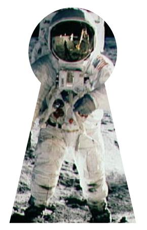

PETZOLD BOOK BLOG
| Recent Entries | ||
| < Previous | Browse the Archives | Next > |
| Subscribe to the RSS Feed |
August 17, 2006
Roscoe, NY
OK, one more single-element XAML file. This one, in a little different form, is from my book, and demonstrates using a path for clipping.

You can download or run the KeyholeOnTheMoon.xaml file, or just look at it:
(c) Copyright Charles Petzold
www.charlespetzold.com